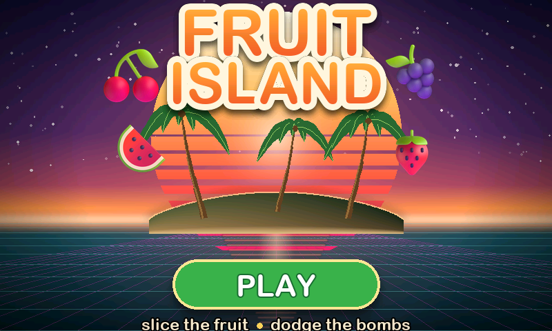
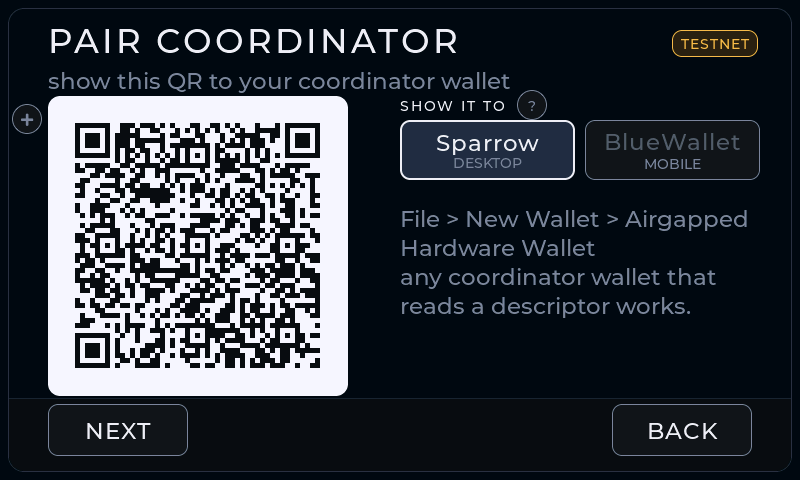
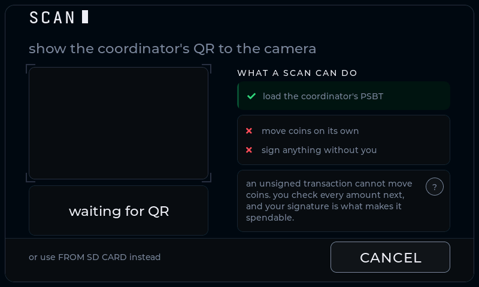
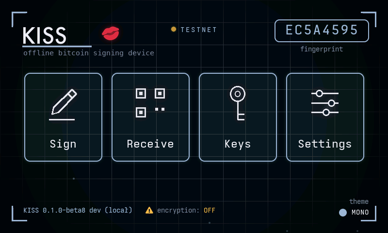
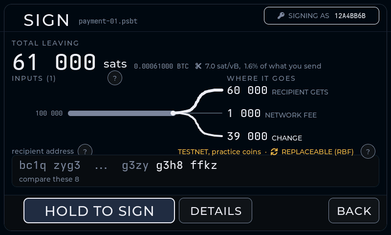
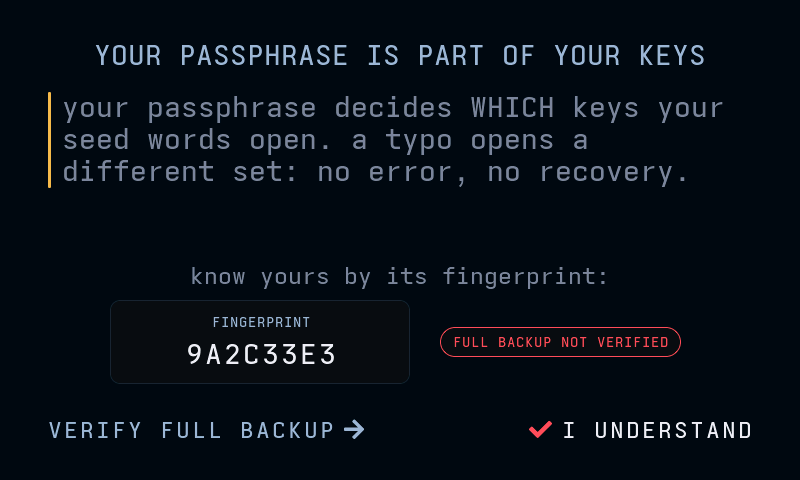

It boots into a game
FRUIT ISLAND is a real, playable game. A secret gesture on its menu opens the signer; a different one opens a spare set of keys, so there is always something to show.
01 / start here
Your keys stay on this device. Everything that needs the internet happens somewhere else. That other app is called a coordinator.
KISS shows a QR holding your public keys, called a descriptor or a zpub. Your online wallet can then see your balance and give out addresses, but it holds nothing that can spend.
It picks the coins and the fee and makes a PSBT, a transaction with no signature on it yet. Nothing can move.
Pass the PSBT over by QR or microSD. KISS works out every amount for itself, shows you, and signs only after a deliberate hold.
Take the signed transaction back the same way and your online wallet sends it. KISS never touched the network.
Pairing offers Sparrow on desktop and BlueWallet on mobile, and any other wallet that reads a descriptor or a zpub will work. If it calls itself watch-only, that is correct, and it is the point.
02 / what it does
FRUIT ISLAND is a real, playable game. A secret gesture on its menu opens the signer; a different one opens a spare set of keys, so there is always something to show.
A small payload fits in one still QR code. A whole transaction will not, so KISS chops it into numbered pieces and plays them as a short looping animation for your other wallet’s camera to read — that scheme is called BC-UR, and every wallet worth pairing with speaks it. Or skip the camera and carry the file on a microSD card. No cable ever carries your data.
One sp1 address you can hand out again and again, without the privacy cost of reusing a normal one. An optional scan key lets your wallet find those payments but never spend them.
Every amount, the fee and your change are worked out here, not taken on trust. A high fee, or change so tiny it harms your privacy, turns amber first.
There is a radio chip on the device, and KISS holds it switched off from the first instruction of every boot. The build fails outright if any networking code reaches the firmware.
Latin, Cyrillic, Japanese, Korean and Simplified Chinese, each with its own font. Buttons resize rather than truncate, and the build fails if a key action gets too small to read.
Your keys are only as good as the randomness behind them, so the device lets you audit its own. It draws 5000 numbers from the chip, stacks them into a live bar chart, and scores how evenly they landed — a lopsided chart means bad randomness. It also tells you the one thing no score can prove: that the noise source is switched on. All on the device; nothing leaves it.
03 / the device
One board, no soldering: the Guition JC4880P443C. It arrives with everything KISS needs — a colour touchscreen, a camera for reading QR codes, and a slot for a microSD card. The one thing you have to do yourself is turn the camera around, and that is the rest of this page.
The chip that runs KISS has no WiFi and no Bluetooth. None. It cannot go online even if it wanted to.
The board does carry a second chip that can do wireless, because the board is sold for other products too. KISS switches it off and holds it off. The very first thing the device does when you power it on is pin that chip down, before anything else runs, so the software it came with never gets a chance to start. There is no wireless code inside KISS at all.
You do not have to take our word for it. The home screen and Settings
both show radio: held in reset, and that line is read
from the chip itself each time, not printed from memory. If you own a
multimeter, you can measure the radio chip’s off switch
(pin GPIO54) and watch it sit at zero volts.
The device ships with the camera facing the user, selfie style. Scanning a coordinator's QR needs it facing away from the screen. The flip is simple but fiddly; step-by-step photos are coming. Until then:
04 / trust, then flash
For the beta, release artifacts live on the GitHub Releases tab: the
merged firmware image
kiss-signer-<version>.bin (flashed at offset 0),
SHA256SUMS plus its detached GPG signature
SHA256SUMS.asc, the release public key
kiss_signer_pgp.asc, and release.json.
Beside them sits
kiss-signer-<version>-offline.zip, that same firmware
with an install page and this guide, for flashing with no network at
all. It is signed on its own by
kiss-signer-<version>-offline.zip.asc.
gpg --import kiss_signer_pgp.asc
gpg --verify SHA256SUMS.asc SHA256SUMS
shasum -a 256 --ignore-missing -c SHA256SUMS # macOS
sha256sum --ignore-missing -c SHA256SUMS # LinuxOne line of that output matters. The fingerprint must read exactly:
166A CBF3 7786 FCEA A694 96DE 886F 1BFE B84E F1C0
One line looks alarming and is not:
WARNING: This key is not certified appears for every key
you have not personally signed. The name reads
KISS Signer releases, but a name on a key is free text
either way. The fingerprint above is the identity.
A fingerprint is only as good as where you read it. Cross-check this one somewhere other than this page.
Hash with Get-FileHash firmware\kiss-signer-<version>.bin
in PowerShell and compare against SHA256SUMS by eye. Verify the
signature with Gpg4win.
The install page hashes the firmware in your browser before it offers you the button, and that check runs the same way inside the offline zip. It still does not verify the GPG signature for you, in either place. Do that yourself once per release.
05 / read twice, flash once
On the beta you are using today, someone who steals the device and has the right equipment can read your seed words straight off the chip. The hardened build is what closes that hole. It turns two locks, and it turns them both the first time it starts.
The device makes up an encryption key, all by itself, and writes it into the chip where nothing can read it back — not your computer, not us, not you. From then on everything saved on the chip is scrambled with it. Someone who pries the memory open reads noise.
Your seed words need saying separately, because they are kept in their own little filing cabinet on the chip, and that cabinet is not covered by the scrambling on its own. It gets its own lock at the same time. Otherwise the one thing worth stealing would be the one thing left readable.
From then on it will only start firmware that has been signed with keys you made and keep. Someone who gets hold of the device cannot quietly replace the signer with a lookalike that phones your seed home, because their version is not signed and the device simply will not run it.
Both locks turn together, on the same first boot. That is not a preference: a device that got only the first lock can never accept the second one afterwards, so it is both or neither.
The home screen and Settings both show an encryption line, and the device reads it off the chip every time rather than remembering it. Amber OFF means you are not protected yet. When it goes calm, both locks are on — and that is the moment to create keys you actually care about, not before.
06 / hand it to anyone
Three rules before the steps, because the device will not stop to say them: every passphrase opens keys, so there is no "wrong passphrase" error and never will be; the fingerprint on the home screen is how you tell which keys you opened; and this signer is never online, so your coordinator does all the talking to the network.
.psbt
on SD card. BlueWallet calls the import “watch-only”,
that is expected and correct.
This is a visual checklist, not an extra wizard. Complete it once with valueless TESTNET coins before using keys you care about.






KISS re-derives the whole transaction on its own screen and speaks up, in plain words, before you sign, always a soft CAUTION you acknowledge, never a silent surprise:
Address reuse works differently, because it has to. KISS never sees the chain, so it cannot know which of your addresses were actually paid. Rather than guess, RECEIVE hands out a fresh address each time and keeps a standing reminder to use a new one per payment.
Several cautions stack into one summary; a ? opens a WHY FLAGGED card explaining each and the fix (freeze or label the coin in your coordinator). When any caution is present, the sign button is gated behind an I UNDERSTAND tap. To confirm an incoming address is yours, use Receive → VERIFY and scan what your coordinator shows.
Learn as you go: tap the ? beside any unfamiliar term
(RBF, fingerprint, coordinator, dust) for a short card. Some carry
a small diagram, like WORDS + PASSPHRASE → FINGERPRINT.
Tapping the home fingerprint explains what that code is. On the signed-QR
screen, EASY SCAN slows the loop and enlarges the dots
for stubborn phone cameras. (Tapping the KISS logo on the game menu locks
straight back to the game.)
Settings shows exactly what is on the device, bottom-left:
KISS <version> (<commit>), plus an honest note
while flash encryption is off.
07 / three storage modes
Setup asks this once, and Settings can change it later. All three modes are offered on every build. What differs between them is what an attacker gets from the thing they physically took.
In every mode your passphrase is never stored. It is typed fresh each unlock, and it is what guards the keys that hold your coins. Recovery words on their own derive the base keys, not your passphrase keys.
Your seed words stay on the device and it unlocks on its own. On the normal beta they are written in the clear, so someone with the device and the right equipment can read them out of the chip. On a flash-encrypted build the same mode stores them encrypted. The device tells you which of the two you are on, and it works that out by asking the chip directly rather than by trusting what the firmware thinks.
Your seed words are kept on the card as a sealed file that only this device can open, so the card on its own is inert. Insert it before unlocking. The split is the point: a lost card gives up nothing, and the device on its own holds no copy of the card's contents.
The gap this leaves is someone holding both the device and the card. Closing it is what flash encryption adds, by protecting the device key at rest. Until then, SD is still the stronger of the two persistent modes, because FLASH on an unencrypted build stores the seed words in the clear.
Nothing is written anywhere. The seed words are held in RAM for the session and are gone on lock or power off, so you load them again every time, by typing them or by opening an encrypted backup. A device taken while locked holds nothing to find. This is the mode to use for anything that matters on beta firmware.
08 / habits that hold
Seven habits for running a signing device. Every one of them is the reverse of a way people have lost coins.
This is beta firmware on unencrypted flash. Practise the whole loop — pair, receive, sign, broadcast — on a wallet you would not mind losing, and keep doing that until the flash-encrypted build has passed its hardware tests.
A signer you did not verify is a signer somebody else may have written. The hashes and the signature take a minute: check the download.
It is not a password on top of your wallet. Every passphrase opens keys, so there is no wrong-passphrase error to warn you, and it is never stored anywhere on the device. Change one character and you are in a different, empty wallet. Lose it and the coins are gone with it.
The words and the passphrase together are the wallet. Stored in one place they are one secret, and whoever finds it has everything. Stored apart, neither half spends on its own.
The encrypted card is sealed to this device, which makes it a second factor, not a backup: if the device is gone, so is the card’s key. A restore starts from the words on paper. See where your words are kept.
KISS works out every amount, the fee and your change for itself and shows them on its own screen. That screen is the one thing a compromised computer cannot rewrite, so it is the one worth reading. If the address or the amount differs from what your wallet showed, do not hold to sign.
Your online wallet should hold nothing that can spend; if it ever asks for your words or your passphrase, something is wrong. Hand out a fresh address for every payment, too — reusing one links those payments together in public, for anybody who looks.
09 / no hardware required
Open the simulator — the signer's own firmware compiled to WebAssembly. Every screen, the real word list, the real derivation, a real signature. Nothing is installed and nothing leaves the tab. One button opens a signer that already has keys, so every screen behind it works immediately.
One thing there is not real: there is no camera behind CAMERA AND TAPS, so that entropy source is filled in for you. The dice and the taps are yours. A browser tab is not a signer — make the keys that matter on the device, offline.